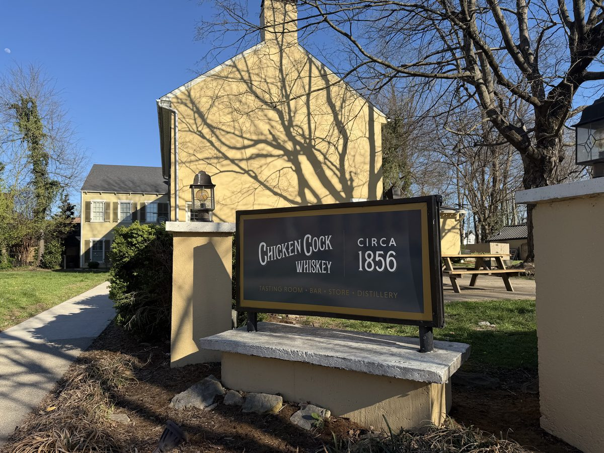
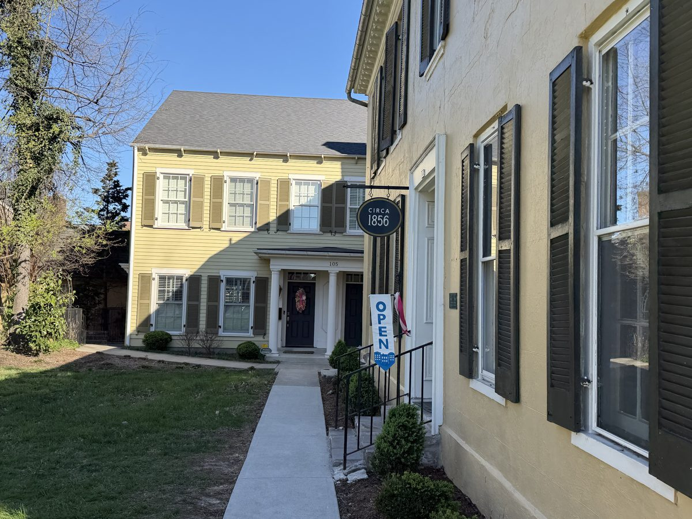
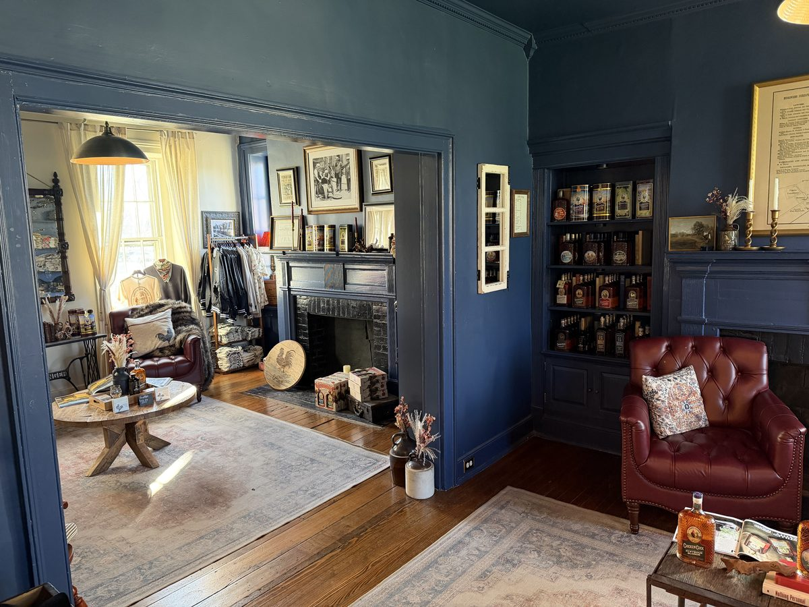
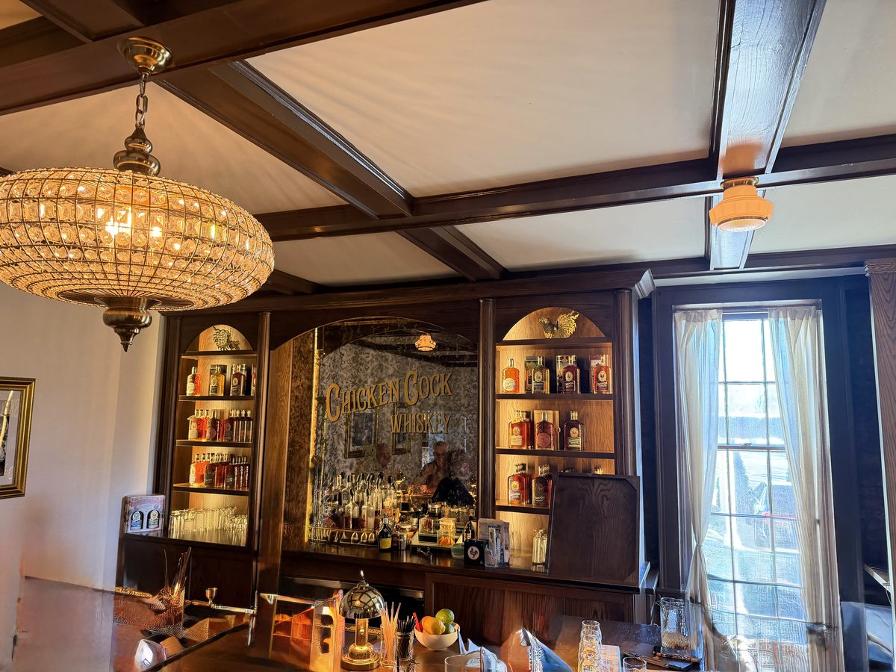

An upscale bar, tasting room, and micro-distillery in the heart of downtown Bardstown, right across from Talbott Tavern on Stephen Foster Avenue. Official Kentucky Bourbon Trail stop with craft cocktails and guided flights.
Chicken Cock Whiskey Circa 1856 is one of the newer additions to Bardstown's bourbon scene, and it's a different kind of stop. Housed in a charming yellow house on the southeast corner of Stephen Foster Avenue, directly across the street from the Old Talbott Tavern, it's part micro-distillery, part upscale bar, part retail shop. The vibe is polished and refined, more cocktail lounge than production facility.
This is an official Kentucky Bourbon Trail stop, but the experience leans more toward tasting and enjoying cocktails than watching bourbon get made. If you're looking for a deep production tour with fermenters and warehouses, this isn't it. Set your expectations on space, too: the accessible area is limited to the bar (which is on the smaller side) and two front rooms that make up the gift shop. The historic house itself is cool, but you won't be exploring much of it.
The brand has serious history, Chicken Cock dates back to before Prohibition, and the "Famous Old Brand" tagline is earned. The whiskey lineup includes small-batch bourbon and rye expressions that have won multiple awards. The Bardstown location does small-scale distilling on-site, so you can see production happening, just at a micro scale.
The real draw here is the bar. If you're a cocktail person, ask about the old fashioned flight: it's a great way to taste their whiskey in a format that goes beyond a standard tasting pour. The staff is knowledgeable and the atmosphere makes it a solid spot to start or end a Bardstown bourbon day. They also serve light bites, check the menu for current offerings.




A guided flight through the Chicken Cock Whiskey lineup with a knowledgeable host who walks you through the brand's history and tasting notes. This is the core experience, you'll sample their bourbon, rye, and any seasonal or limited releases. It's intimate and well-paced, not rushed.
Skip the formal tasting and just enjoy the bar. Order craft cocktails made with their whiskey, try a pour of something you haven't had, and soak in the atmosphere. The bartenders know the lineup well and can guide you based on what you like. No reservation needed for bar seating, though it can get busy on weekends.
Chicken Cock uses Resy for tasting reservations, book through their website or the Resy app. Weekend afternoons fill up, especially during peak bourbon season (September–November), so booking a few days ahead is smart. Weekday visits are much easier to walk into.
For the bar, no reservation is needed. You can walk in during business hours and grab a seat. If you're visiting on a Saturday, arriving earlier in the day gives you the best shot at a relaxed experience before the afternoon crowds.
The location is right across from Talbott Tavern, so it's easy to combine the two, a flight at Chicken Cock followed by dinner at the Tavern makes for a solid Bardstown evening. Street parking on Stephen Foster Ave and 3rd Street, or use the public lot at 113 East Flaget Avenue.
The retail space carries the full Chicken Cock lineup plus branded merchandise. If you find something you like during your tasting, you can buy a bottle to take home. They occasionally have limited releases and exclusive bottlings available only at the Bardstown location. The gift shop is open during regular business hours and doesn't require a tasting reservation to browse.
Chicken Cock Circa 1856 is a nice add-on if you have time in your Bardstown day, but it shouldn't bump a bigger distillery off your list. The prime downtown location, right across from Talbott Tavern, makes it easy to pop in, and the old fashioned flight is a highlight if you're a cocktail fan. Just know that the space is smaller than you'd expect and the experience is more bar-forward than distillery. If your schedule is tight, prioritize the full-production distilleries first and save Chicken Cock for when you have an afternoon or evening gap to fill.
Address: 103 E Stephen Foster Avenue, Bardstown, KY 40004
Hours: Monday–Wednesday 11 AM – 6 PM, Thursday–Saturday 11 AM – 8 PM, Sunday 1 PM – 5 PM
Parking: No dedicated lot. Street parking on Stephen Foster Ave and South 3rd Street. Public lot at 113 East Flaget Avenue.
Reservations: Book tastings via Resy. Bar seating is walk-in.
Food: Light bites menu available, small shareable plates, not a full restaurant.
Kids: The setting is bar-forward, so it's best suited for adults. No tasting under 21.
Chicken Cock's downtown Bardstown location makes it easy to pair with several nearby stops:
Major Bourbon Trail stop just outside downtown. You Do Bourbon tasting is one of the best on the trail.
Family-owned with a cult following. The iconic pot still and grounds are worth the visit.
No-frills craft bourbon near downtown Bardstown. Walk-in friendly, great whiskey.
Small-batch craft distillery right in downtown Bardstown. Easy to combine with Chicken Cock.
Chicken Cock works best as a Bardstown afternoon or evening stop. Pair it with production tours at Heaven Hill, Willett, or Preservation earlier in the day, then wind down with a guided flight or cocktails at Circa 1856. See our 3-Day Bourbon Trail Itinerary for a full Bardstown day plan.